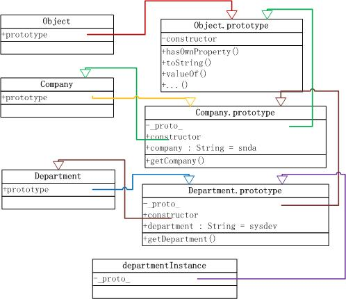

首先看 js引擎的预解析期

大家想想，有哪些情况会产生undefined值？我总结了下：有如下几种情况：
想想jQuery源码中为什么需要这么做？
因为当js引擎运行读取到undefined变量时，总会向上遍历闭包scope链，搜索到window对象名叫‘undefined'的属性上为止， 而且window对象是一个拥有庞大属性的全局变量。这整个过程是一个耗性能的过程。
所以我们一般会缓存到function内，做到提高性能。
很明显，argumentNum(undefined)返回了不是我们所期望的'有参数'.怎么解决这个问题呢？
使用arguments.length来标识参数个数是最有效的方法。jQuery源码中就能在很多工具函数里看见这种参数判断的影子。
EMACScript官方的定义：A variable that contains null contains no valid Number, String, Boolean, Array, or Object.
null是表示尚未存在的对象,为什么是一个对象呢？
js引擎内部，就解析null是一个空引用，一个未指向任何对象空引用。
那我们再看看，null的一般用法:
其实，布尔值类型，大家再熟悉不过了。我这里要说的是下面这个问题。
我们知道任何一种语言里的每个值都有falsy或truthy(即真假性)性质的，那么在javascipt里，哪些值是具有falsy性质的？
可以看出：以上的六种值是有falsy性质的。
而其实在javascript语言中除此六种之外的其它值都是有truthy性质。特别注意字符串‘０’不是fasly的。
所以，我们会在源码里经常看到js特有的条件逻辑判断：
这是被推荐的’给形参指定默认值’的写法
javascript是一门弱类型的语言。
总有初学者误认为这句话是指js没有数据类型，
其实真正的含义是指开发者不需要显性的指定转化到上下文中需要的数据类型，js引擎会帮忙隐性地自动转换。
大家看下各种不同类型上下文的自动转化demo
是不是觉得隐性自动类型转换看起来似乎很美好阿？ 可真的是这样嘛？
如果把js比作这部本田车，那么‘自动类型转换’就像是定速巡航系统。 为什么会这么说呢?
太复杂，太多的不可预料性～在各种运算符中，就会出现复杂而意想不到的类型转化
从demo我们可以看出规律吧！？
从demo大家可以看出规律是！？
那么，这种类型比较的规律是！？
从demo看出，这种类型比较的规律是！？
那么，这种类型比较的规律是！？
上面的结果我们可以看出：两个操作数类型不同就肯定不严格相等。
任何面向对象语言中，都有对象的概念。js也不例外，也有相同意义的对象。
js中的所有其他对象都继承于Object.
对应 之前company的demo，现在我们使用prototype来定义Company类
我们定义一个Department(实现继承Company)
|
|
从图中我们可以看出： 原型继承链、 属性访问的遍历过程  |
是指查找对象属性时遍历原型链上的所有属性，直到Object.prototype。
性能建议：要合理使用The For In loop。
那么假设一定喜欢用，有什么方法避免这个性能消耗呢？ 答案肯定是用的！
该方法是JavaScript中唯一一个处理属性但是不需要查找原型链的方法
常见用法：会与 For In循环一起使用，减少遍历对象原生链的性能消耗。
可以用于删除对象的属性
常见用法：防止内存泄露，特别在ie下。
有以下三种定义方式：
所以我们要：变量被初始化之后使用变量
大家答案正确嘛？ 即使没答对也没关系，看了后面的分析就知道答案原因了
现在，我们返回理解下 之前的demo,就变得很简单啦！
有人说闭包就是一个函数！对嘛？ 函数是 JavaScript 中唯一拥有自身作用域的结构，因此闭包的创建依赖于函数
总结一下：
答案很简单，但我们从js引擎的整个解析情景图来分析下
这时在执行fun1()中，通过遍历scope链，来显示num变量，结果显而易见。
当fun1运行完后，删除fun1调用对象
现在我们再看看最初的demo： 同理画出js解析阶段的情景图
这时在执行fun1()中，通过遍历scope链，来显示num变量，结果为0。
当fun1运行完后，删除fun1调用对象
/
#